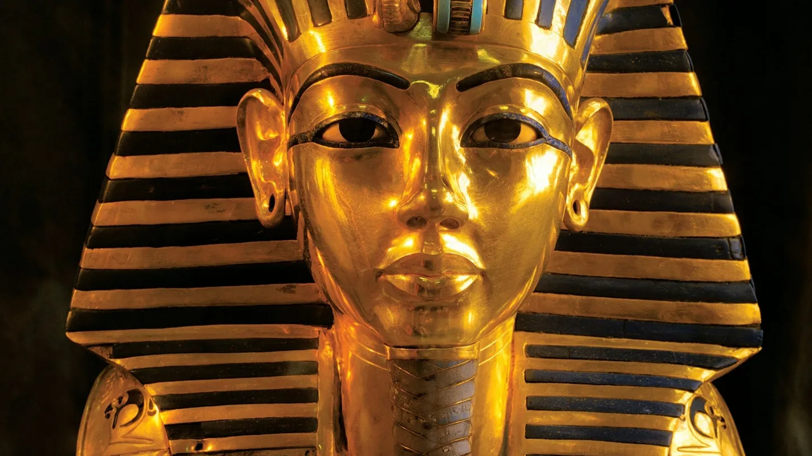

El rey Tut fue más relevante por su contribución al conocimiento del antiguo Egipto ya estando muerto que por sus logros en vida.

De no ser por el impresionante descubrimiento de su tumba, al rey Tutankamón (ca. 1341 - ca. 1323 a.C.) desde luego que no se le conocería en todo el mundo por un apodo, el rey Tut.
Durante el reinado del niño rey no sucedió nada reseñable.
Cuando ascendió al trono a la edad de nueve años, el país seguía sumido en el caos que desató la decisión tomada por su difunto padre,
Akenatón, de sustituir la religión politeísta de Egipto por una monoteísta.
Según se cuenta, un consejero real llamado Ay manejó al joven rey cual marioneta,
concretamente en lo que atañía a su orden de revertir la política de Akenatón y
reinstaurar los queridos dioses antiguos y sus templos.
Excavación de la tumba de Tutankamón
A pesar de las innumerables teorías que se han aducido, la repentina muerte del rey Tut sigue siendo un misterio. ¿Cayó víctima de la malaria? ¿O acaso acabó con él la gangrena que le provocó la rotura de una pierna? ¿Lo atropelló un carro? ¿Quizás fue despedazado por un hipopótamo? Fuese cual fuese la causa de su muerte, parece que el rey fue enterrado a toda prisa y no tardó en caer en el olvido.
Avancemos 3000 años. En 1922, el arqueólogo británico Howard Carter desenterró la tumba de Tutankamón en el Valle de los Reyes. El descubrimiento fue noticia en todo el mundo. Lo que más impresionó a la gente no fue la momia de Tut, sino las ofrendas enterradas con él, descritas por Carter como un "extraño y maravilloso revoltijo de objetos extraordinarios y hermosos".